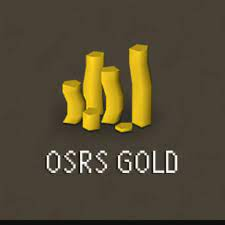

Venezuela on ajalooliselt olnud jõukuse poolest pigem tipus kui taga pool. Alates 2010 aastast on neid vaevanud hüperinflatsioon, korruptsioon, ebapädevad poliitikud ja kodusõda. Ligi 90% rahvastikust elab vaesuses. Hüperinflatsiooni tõttu on praegu keskmine palk seal umbes 5 USD kuus.
Venezuela majandus on nii halvas seisus, et keskmisel inimesel
on mõistlikum mängida OSRS-i ja müüa ingame kuld päris raha eest
maha. Kuna see innustab neid tegema BOT-e ning leidma muid
viise kuidas ingame raha kiirelt teenida siis nened pärast on ka
OSRS-i majandus väga kehv.
Lisa info siin.

Kuna OSRS GP RWT aka real world trading on keelatud, sest OSRS GP on Jagex-i(mängu omaniku) intellektuaalne vara, siis saavad Venezuela inimeste poolt mängitud kasutajad tihti BAN-i. See loob konstantse vajaduse kõrgelt treenitud kasutajate järele, mis on järgmine koht, kus nad saavad raha teenida. Ei ole üldse ebatavaline, et mingi inimene, istub päevas 14-16 tundi ekraani taga ja lihtsalt treenib kasutajaid. Kuna selles mängus on treenimine ekstreemselt aeglane, siis tavaliselt võtab inimene palju kasutajaid korraga ette. See loob olukorra kus päris mängijaid on palju vähem kui mängijaid online.
| Tegevus | AFK? | Raha/tunnis |
|---|---|---|
| Vorkath | EI | 3M |
| Zulrah | EI | 2.5M |
| Account farming | JAH | Sõltub |
Rohekm infot siin